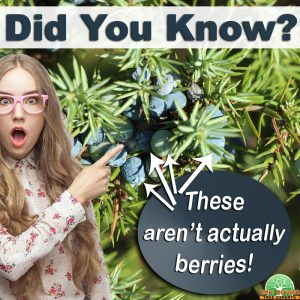

Any tree company in Ocean County knows how hard it is for any tree to survive winter. Last month we discussed how deciduous trees do it. By dropping leaves, non-evergreen trees can go into a state similar to hibernation. Conifers, on the other hand, stay green all year long. Why do some trees need to lose their leaves in order to survive winter and others do not? Let’s take a closer look at conifers, their leaves, and their shape to understand how they make it through months of cold temperatures and reduced resources. It is because of these adaptations that you find many conifers in mountain regions and colder climates.
Conifers At a Glance

Conifers are commonly referred to as pine trees. While all pine trees are conifers, not all conifers are pine trees. That being said, a majority of the conifer family is made up of pine tree varieties that many people recognize like spruce trees and cypress trees.
A conifer is any type of plant that has a cone. While most people will bring up a picture of a pine cone in their mind when we say that, all cones do not look alike. Some trees have what appear to berries but are actually tightly compacted scales like Juniper trees. Others, like yews, have a cone that looks more like a fruit. What these cones all have in common is that the seeds of these trees are not encased in a fruit, but are bare on the tree.
All conifers are not green and not all conifers are evergreen. There are blue spruces and golden cypress’ and just about every other color you can think of. If you’ve been wanting to add some year-round color to your yard, contact any great tree company in Ocean County (like us) will be able to give you some recommendations. Just as not all evergreens are green, not all ever greens are “ever green.” There are a few species that actually do lose their needles in winter such as the dawn redwood and larch trees.
The shape of conifers is another area where there is some misconception. Just as most people will think of a pinecone when you talk about a cone on a tree, many visualize the classic Christmas tree cone shape when you say evergreen tree. Many, many species of conifers do grow in a tall, conical shape, but not all. There are traditional cones, broad or upright ovals, globes, and mounding varieties.
Hold Onto Your Needles, Winter is Coming
Deciduous trees lose their leaves every winter as a way to conserve energy and protect themselves. Coniferous trees, however, survive the winter by holding onto their needles. The reason needles stay and leaves go has a lot to do with the waxy, outer coating of needles. This covering is called cutin . This not only helps to slow water loss during periods of reduced inputs, but performs photosynthesis with less water. Less water inside and out helps protect the needles, and therefore the tree, from freezing and dying. Plus, these trees have a continuous source of energy throughout the winter in contrast to deciduous trees which do not. The shape and covering of needles also make it difficult for snow to stick to branches which reduces damage during winter storms.
In addition, because conifers don’t drop their needles, when spring comes, they do not need to expend tons and tons of energy growing new ones. There are, of course, some needles that do die and fall off, but they are quickly replaced by new, healthy needles. Needle drop happens at different times and different rates for every species of conifer. Some lose them all at once, like a deciduous, but grow them back before winter. Certain varieties will hold on to needles for 2-5 years, others for 5-7. If you have a conifer in your yard that starts to turn yellow every fall, don’t panic! It could be normal loss of old needles. Not sure if it’s normal for your tree? Give a tree company in Ocean County a call to help figure out if there is a problem.
As a Tree Company in Ocean County, We Love Trees of All Types
No matter what type of trees you have in your yard, deciduous or coniferous, we can help care for them. Oftentimes, new homeowners are not familiar with their trees growing patterns and aren’t sure what is normal and what isn’t. It can take years to get to know your trees, but we can help expedite that. Any time you have a question about the health of one of your trees, give us a call.